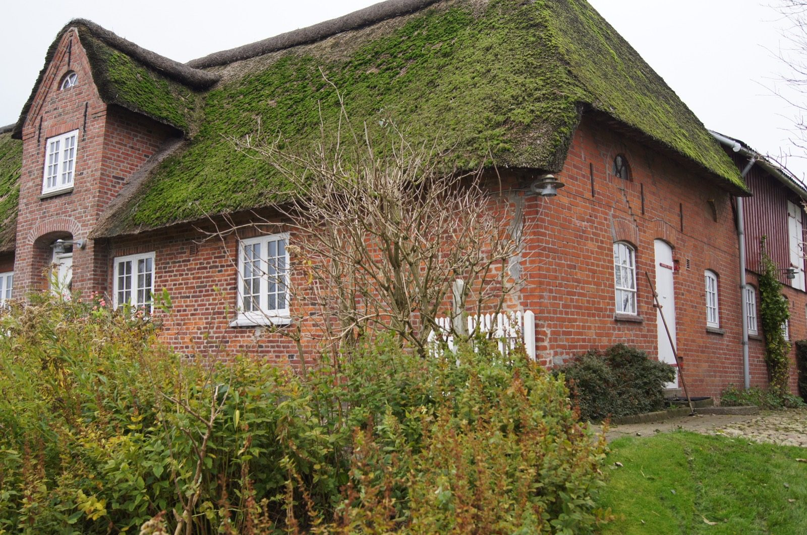

Kapitel 15 – I krigens skygge på Als og i Tøndermarsken
Nolde og Ada følger entusiastisk med i krigens gang – først fra fiskerhuset på Als, siden fra deres nye bolig i Tøndermarsken, Utenwarf. De er overbeviste om, at Tyskland vil sejre, men de forfærdes også over de grufulde ofre, krigen kræver.